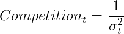

Competition in the Spain's La Liga
We follow the money to explain competitiveness in Spain's La Liga
Peter Xenopoulos, Stefan Cherubin
Spain's La Liga is one of the most popular soccer leagues in the world, hosting both Barcelona and Real Madrid, as well as more recent contenders such as Atletico Madrid. These three teams have occupied the top 3 positions since the 2012-2013 season. Additionally, at least one of Barcelona or Real Madrid has finished in the top 3 since the 1969-1970 season. Since the 1970-1971 season, just 9 clubs have won the league, which is less than half of all the clubs currently in the league (20), with either Barcelona or Real Madrid winning the league 75 percent during that time frame.
We define competition in a given season as a function of the variation in the points scored by each team. Below, you see each team's points per match for each season. We can see that in recent years, a well defined cluster containing Barcelona (red) and Real Madrid (blue) has emerged. As we see, there is more variation in recent years, meaning we have really good teams and really bad teams. The more spread out the teams are in the graph below, the less competition that season has.
We plot competition over time below. If you hover over one of the seasons, you can see a bar chart illustrating the difference in average points per match. In competitive seasons, we will, as we see above, see that teams cluster closer together in terms of points per match. In seasons where competition is lower, we see big differences between the top and the bottom of the league. A low competition season will have the league leaders and worst teams incredibly far apart. In seasons with lots of competition, the difference shrinks, and the distribution will look more uniform. On our first plot, this means that the points will be more spread out in times of weak competition, and more bunched in times of competition.
Competition in La Liga since 1970
It's clear that the league is becoming drastically less competitive, especially in the last decade, however the general trend seems to have started in the early 2000s, when TV contracts were renegotiated. Recent regulations and financial crisis seemed to have maintained the inequality status quo.
Event Descriptions
Here are deeper descriptions of the five events we cover in our visualization.
- Bosman Ruling (1995) - This EU wide ruling banned restrictions mandating a transfer fee be paid for players at the end of their contract. Essentially, players were more free to move from club to club.
- Rise of Digital TV (1996) - Before 1996, La Liga TV deals were negotiated as a league, and there was parity among teams. In 1996, digital TV took hold and clubs negotiated those contracts independently.
- End of Initial TV Deals (2001) - Typically, TV contracts last anywhere between 3 and 5 years. As the value of teams was now more easily known, La Liga TV rights started to become uneven and skewed towards Real Madrid and Barcelona.
- Spain's Financial Crisis (2008) - This is the generally accepted starting year of Spain's recession, which lasted from 2008 to 2014.
- UEFA Financial Fair Play Rules (2011) - Although agreed in principal in 2009, UEFA's financial fair play rules, which cap club financial losses, were instituted at the start of the 2011-2012 season.
Competition Metric
We introduce a metric for competitiveness which relies on the variation in the points per match for each season. We do this for two reasons: (1) we must use per match metrics, as the number of teams in the league has varied between more recent and older seasons and (2) the more variation there is in points per match, the more we have really "good" teams and really "bad" teams. A lower competitiveness metric means that the team had more variation between teams. We see that in general, the trend has been that competitiveness has decreased for the last decade and a half. Specifically, our competition metric for a given season is defined as

Where sigma_t is our standard deviation of points per match in season t.